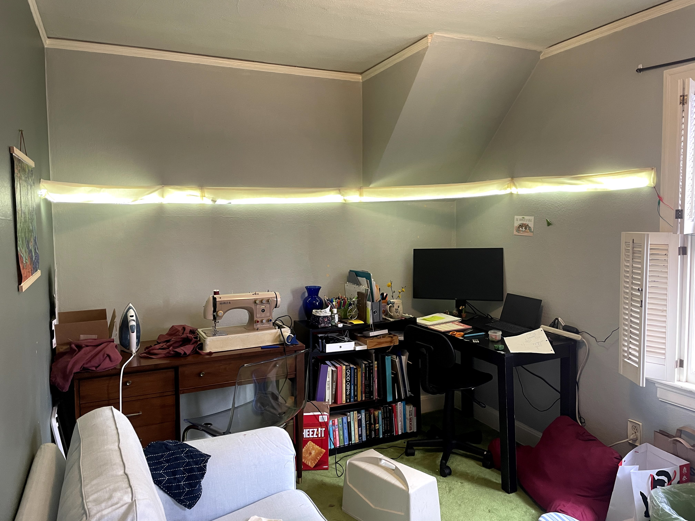
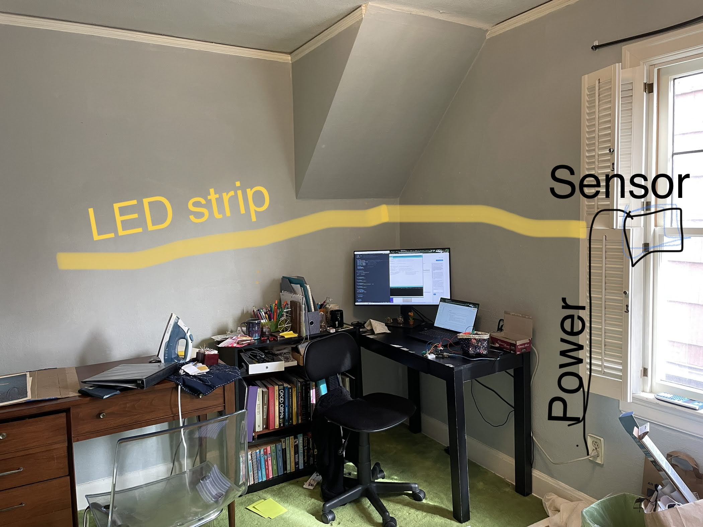
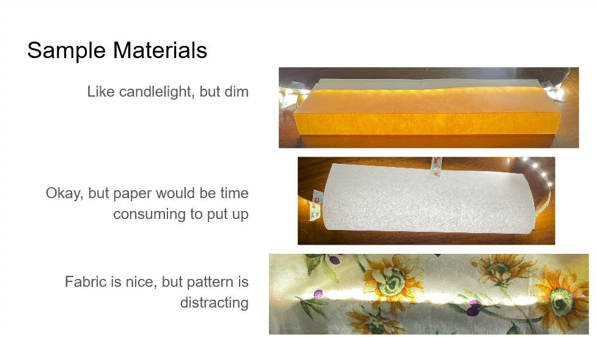
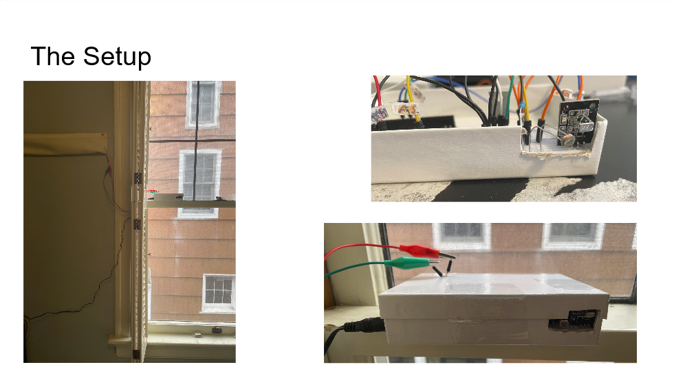
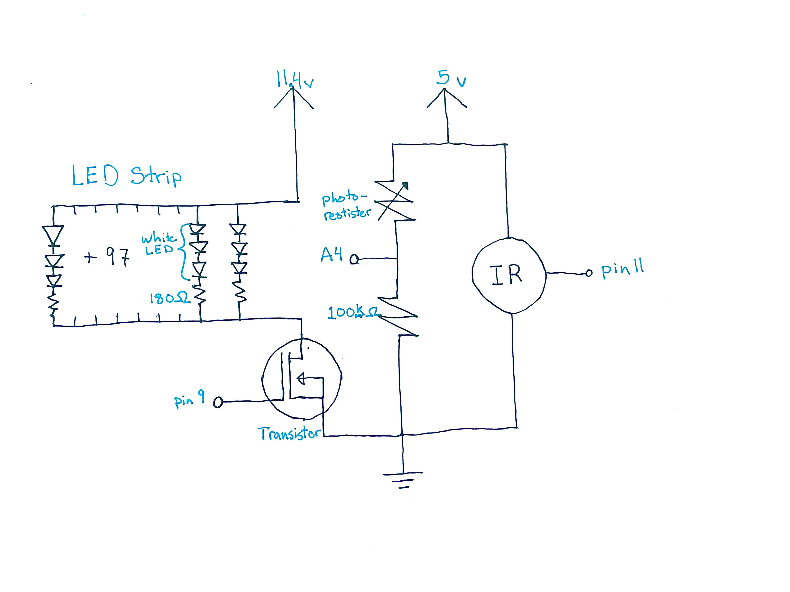
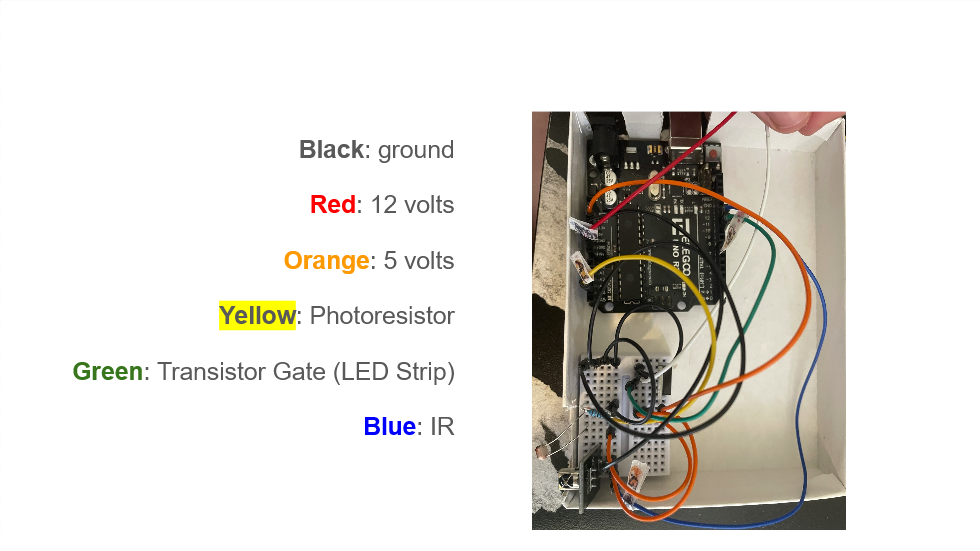
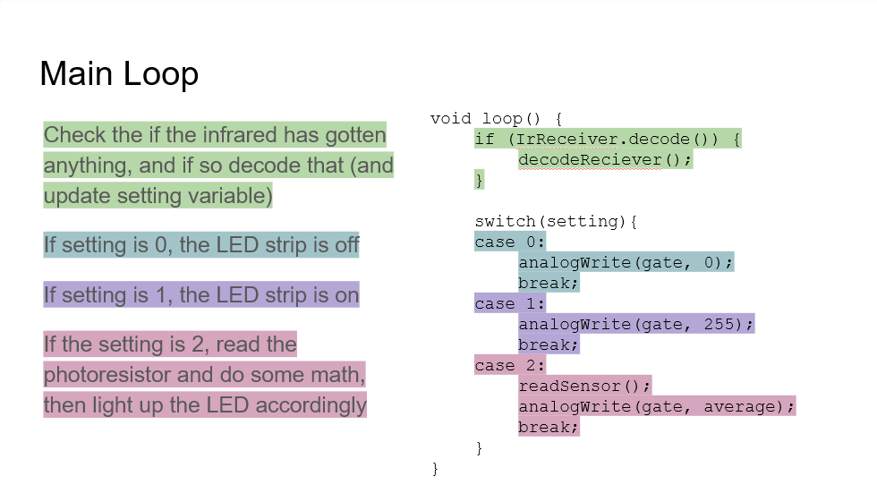
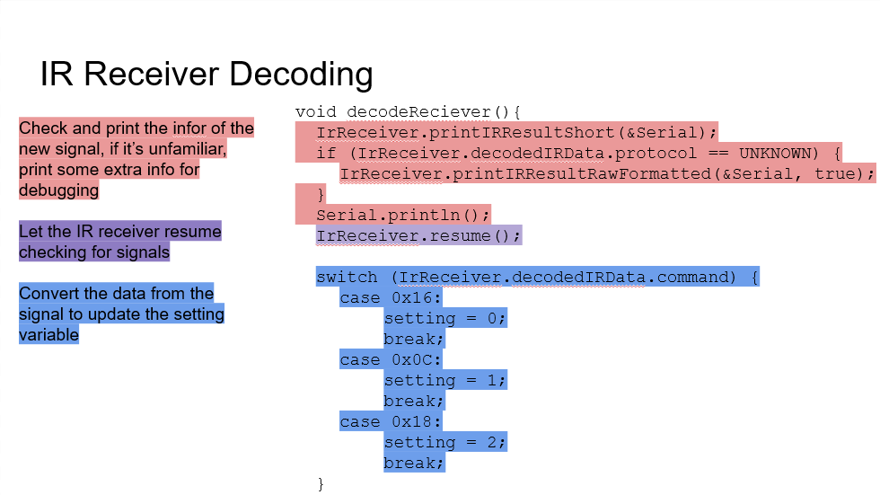
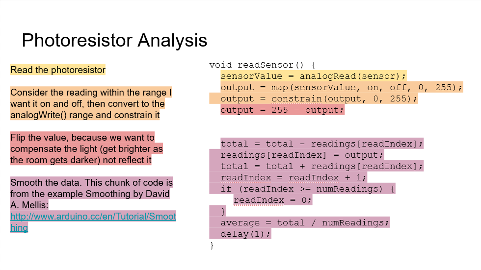

Final: Light Up My Room
For my project I wanted to make lights for my room. I often don't notice when the room gets dim until I'm squinting at my work. So, I want lights that take measure the light of the room, and compensate to give extra light. So, as my room gets dimmer as night sets in, my lights slowly turn themselves on.

The Gif
With an infrared remote, I press 1 to turn it fully on. I then press 2, so that while my big light is on, it turns off, and when I turn my room light off, the LED strip turns itself on. I press 0 to turn it fully off.

Setting it up

Here is my initial sketch. I planned to pin up the LED strip somehow, and have the sensors and wiring by the window, where it can easily reach power.

Since LED light is very harsh, I needed some sort of material to diffuse the light. I tried different papers, and fabrics, and settled on some plain white, loose weaved cotton. Here's a few of my alternative options.

Here's the physical set up of my device. I cut a hole in a box, to stick the IR recievor and the photoresistor out of. I also cut holes for the the wire to the LED strip to exit, as well as for the cord to the power.
The Schematic
I needed 3 parts to my set up: the LED strip, the photoresistor, and the IR recievor. My LED strip needs the 12 volts from power, and to manage the power and current, there needs to be a transistor. The photoresistor and IR recievor both just need 5 volts. the photoresistor is connected to a resistor of 100 k ohms.
The Math
Let's start with the photoresistor, and what resistor to use as V2. When I looked up the range for the photoresistor, I found that darkness creates a resistance of 200k ohms, and bright light creates a resistance of 10k ohms. I want a wide range of sensing, since my project is about sensing whether it's daytime or night time. So I want the difference between the two extreems to be as large as possible, like:
change = V1/(V1 + 10) - V1/(V1 + 200)
if I set V1 to 200 or 10, thats an okay range:
change = 200/(200+ 10) = 200/(200+200)
change = 20/21 - 1/2 = 9.5/21
change = 10/(10+ 10) = 10/(10+200)
change = 1/2 - 1/21 = 9.5/21
if I set V1 to a number between, that gets the largest range:
change = 100/(100+ 10) = 100/(100+200)
change = 10/11 - 1/3 = 19/33
Now let's talk about the LED strip and voltage. I measured Vin, and while it should be 12v, I found mine to be 11.4v. The LED strip is a 100 prong parallel circut. Within each prong is 3 white LEDs and 1 180 ohm resistor. Each white LED has a voltage drop of 11.36. The current in 1 prong is:
V = IR
11.4 - 3(3.3) = I * 180
1.5 = I * 180
I = 0.00833 amperes
I = 8.33 mA
Within a parallel circut, summation is the cumulation of each prong. with 100 prongs:
0.0083 * 100 = .833 amperes
So the total curent I am using is .833 amperes. Since the transistor has a maximum drain current of 32 amperes, I'm well within the range.
The Wiring

The Code
Here a few snippets and explanations, with larger scale explanations. Below is the full code, with more granual explanations.


The Full Code
/* * Code about the IR sensor is based off of code by * Armin Joachimeyer, 2020-2021 * armin.joachimsmeyer@gmail.com * https://github.com/z3t0/Arduino-IRremote. * */ #define DECODE_NEC //Include decoding abilities for IR #include//Include the IR library const int IR_RECEIVE_PIN = 11; // Pin that recieves the IR info const int sensor = A4; // pin that reads photoresistor const int gate = 9; // pin that's the gate to the transistor int setting = 0; //What setting the LED is on (on, off, compensate) int sensorValue = 0; // raw photoresistor data int output; // calculated LED brightness based on one photoresistor reading int off = 900; // any brighter than this and the LEDs are off int on =500; // any darker than this and the LEDS are fully on const int numReadings = 30; // how many readings are averaged at a time (for smoothing) int readings[numReadings]; // holds all the readings to be averaged (for smoothing) int readIndex = 0; // current index of readings (for smoothing) int total = 0; // total of all the readings to be averaged (for smoothing) int average = 0; // average of the readings void setup() { Serial.begin(115200); //Be able to read the IR IrReceiver.begin(IR_RECEIVE_PIN, ENABLE_LED_FEEDBACK); // start up the reciever pinMode(gate, INPUT); // sets up gate pin to be an input for (int thisReading = 0; thisReading < numReadings; thisReading++) { //for numreadings readings[thisReading] = 0; //set that index in readings[] to be 0 } } void loop() { if (IrReceiver.decode()) { // If the infared senses anything decodeReciever(); // decode the reciever, and potentially change the setting variable accordingly } switch(setting){ // the options of the LED setting are: case 0: // if setting is 0, analogWrite(gate, 0); // turn off LED strip break; case 1: // if setting is 1, analogWrite(gate, 255); // Turn the LED strip fully on break; case 2: // if setting is 2, readSensor(); // check the photoresistor (and do some smoothing math) analogWrite(gate, average); // and then turn on the LED strip accordingly break; } } /* * function that reads the photoresistor, * converts that to how the LED strip should be on * and smooths the data to avoid flickering */ void readSensor() { sensorValue = analogRead(sensor); // read the photoresistor output = map(sensorValue, on, off, 0, 255); // map into the analogWrite() range where dark is 0 and bright is 255 output = constrain(output, 0, 255); // constrain the values to the analogWrite() range output = 255 - output; // inverse output, because we want to compensate the light, not reflect the light //Serial.println(output); // This chunk of code is from the example Smoothing by David A. Mellis // http://www.arduino.cc/en/Tutorial/Smoothing total = total - readings[readIndex]; // remove the oldest reading from the total readings[readIndex] = output; // replace the oldest reading with the new reading total = total + readings[readIndex]; // add the newest reading to the total readIndex = readIndex + 1; // move indext to the next oldest reading if (readIndex >= numReadings) { // if you're at the end of the list, readIndex = 0; // go back to the beginning } average = total / numReadings; // find the average reading delay(1); // delay in between reads for stability } /* * Decodes the IR info * This section is especially from Armin Joachimeyer (linked above) */ void decodeReciever(){ IrReceiver.printIRResultShort(&Serial); // print some info about the incoming signal if (IrReceiver.decodedIRData.protocol == UNKNOWN) { // if the info thats gathered is unfamiliar IrReceiver.printIRResultRawFormatted(&Serial, true); // print more info for debugging } Serial.println(); // print a line IrReceiver.resume(); // and let the IR reciever resume checking for signals /* * Checks the data recieved, and if it's data I've specified, changes settings accordingly */ switch (IrReceiver.decodedIRData.command) { case 0x16: //if you press 0 setting = 0; // setting changes to 0 break; case 0x0C: //if you press setting = 1; //setting changes to one break; case 0x18: //if you press 2 setting = 2; setting changes to 2 break; } }